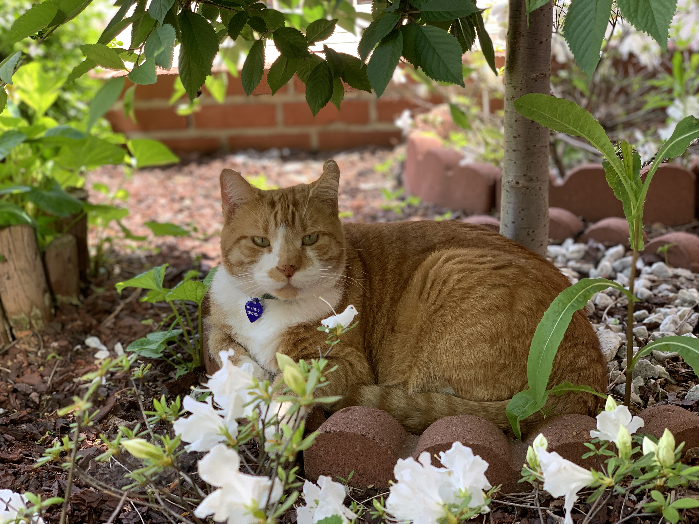
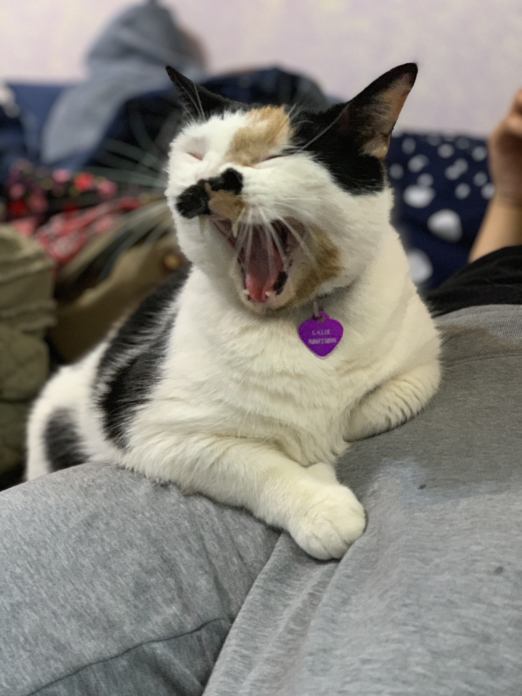
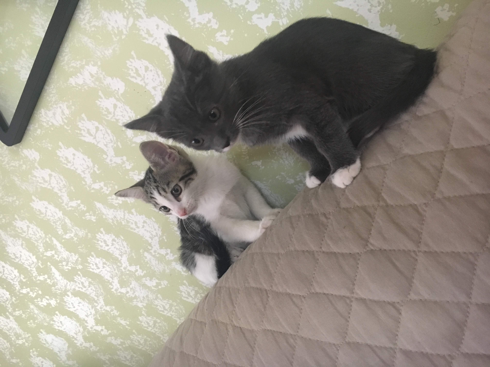

Hello I'm Ashley. google docs Here is information about myself and my pets
I'm 16 years old and I live in queens. I'm the youngest sibling, I have three cats and a dog. When I was younger I wanted to be a doctor and now I'm thinking about working in the business field.When I'm bored I sometimes like to color or watch netflix. I also like to go on Youtube!
In the future I would like to save cats and dogs from the streets because I see them as humans and they deserve to be loved. I began to have this thought because my first cat used to live on the streets until I got her. She had 4 kittens and I was left with one to keep while the others went to safe homes. My third cat was almost left without a home until I was able to show my mom that I will be responsible for another cat. My dog was given to be because of his old owner she was not able to take care of him and she gave him to me. I never bought any of my pets. There's this one cat that is around the streets she has a home, but I still feed her.
Whenever I see a dog or cat the first thing I say is "Aw" and then I want it. If I was able to take care of all pets I really would. This one cat that I have is very funny, her name is Coco. She is not a normal cat, she's very weird.
I really like pets, they're so cute.
  I enjoy spending time with my pets